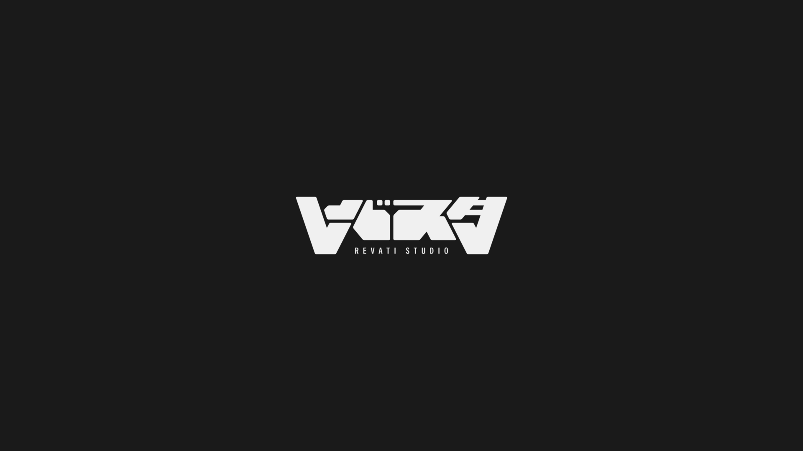

REVATI Studio
Creative Studio01. 概要
映像制作やデザイン、ソフトウェア開発まで幅広く手がけるクリエイティブスタジオです。現在13名のクリエイターが在籍しており、eスポーツチーム「REVATI」の派生事業として自身で立ち上げ、代表およびプロジェクトマネージャーとして制作全体の進行管理を行っています。
13名在籍クリエイター
3領域映像・デザイン・開発
02. 担当業務
クリエイターのディレクション、クライアントとの折衝、案件の進行管理（プロジェクトマネジメント）を担当しています。多彩な才能を持つクリエイターたちをまとめ上げ、品質とスケジュールの両方を担保しています。
03. 課題と取り組み
多種多様な才能を持つクリエイターたちをまとめ上げる中で、効率的な進行管理だけでなく、個々のモチベーションとクオリティを最大化することに注力しています。常に「この人と一緒に制作を進めれば、絶対に良いものができる」とメンバーから信頼される存在であることを目指し、密なコミュニケーションとブレのないディレクションに取り組んでいます。